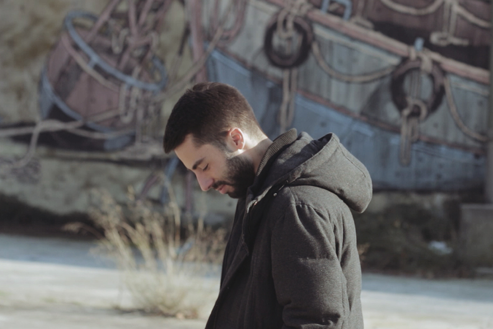
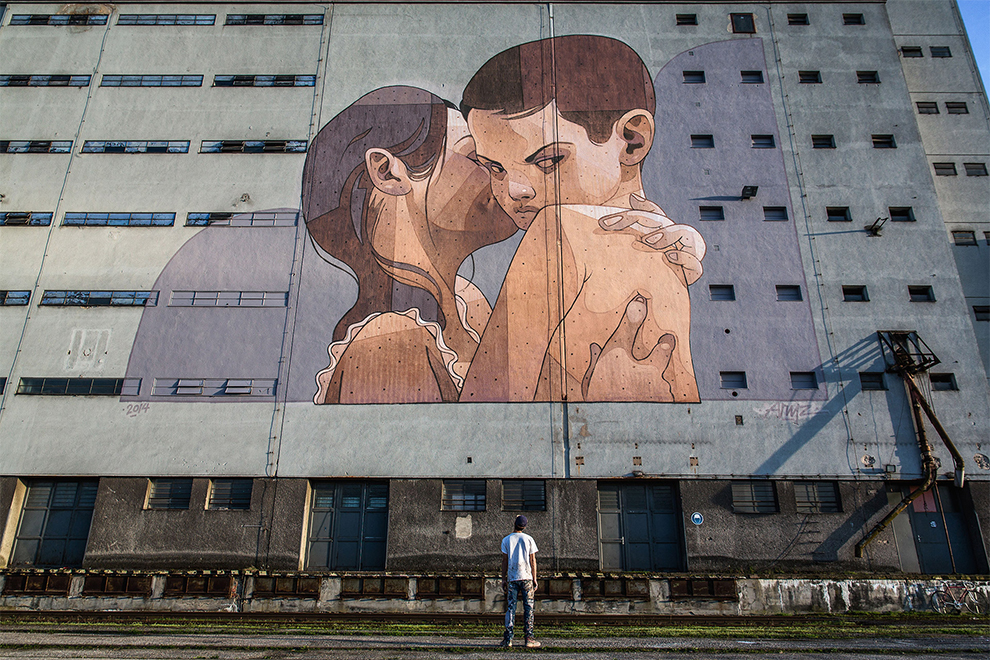

De nacionalidad española y 24 años de edad, Aryz se ha convertido en uno de los artistas urbanos más reconocidos del último tiempo. Originario de la ciudad de Barcelona, de colores vibrantes y motivos al borde de lo surrealista, ha creado un estilo único que le ha seguido por prácticamente todo el mundo: desde Maracay (Venezuela), Estambul (Turquía) Virginia (EE.UU.), Lodz (Polonia), Turku (Finlandia), Civitavecchia (Italia) y Barcelona (España), entre muchas otras. Para él, sus creaciones son algo que no pertenece exclusivamente a la categoría de arte urbano; son intervenciones en lugares abiertos. Lo suyo no es grafiti, sino muralismo. La calle es una gran galería en la que ha tenido que aprender a desenvolverse para salir ileso de según qué situaciones. Los muros atestiguan el trabajo de un artista que juzga severamente el resultado final de sus obras. Si bien gran parte de las expresiones urbanas son derivadas del aerosol, Aryz se ha decantado principalmente por la pintura en espacios de grandes dimensiones. Debido a una lesión en el dedo producto de sus primeras incursiones en la escena grafitera, este artista tuvo que transar el uso exclusivo del aerosol por los pinceles. Este giro del destino acabó con su pertenencia al círculo del graffiti, pero le llevó también a crear piezas más ambiciosas. La obra de Aryz es un trabajo realizado con medios mixtos que le ha llevado a lograr increíbles obras: grandes murales repartidos por el mundo, que han llevado al graffiti a un nuevo nivel artístico. “Fuimos a comprar aerosoles e hicimos nuestro primer destrozo, me acuerdo que no pude dormir y quise volver al día siguiente para intentar arreglarlo, pero acabe empeorándolo. Seguramente si no hubiera empezado a pintar con aerosoles no tendría el hábito de dibujar y hubiera sido un hombre de provecho.” dice el artista respecto a sus inicios en el rubro.
El imaginario de este artista radica en lo extraño; basado en la creación de grandes personajes desdeñando completamente el mensaje, muchos de sus murales se centran en extrañas criaturas, en combinaciones que, al igual que su estilo de pintura, combinan dureza con suavidad, a través de siluetas que revelan disecciones; órganos, esqueletos, exploraciones en un estilo que juega con el surrealismo y el Pop Art. Su paleta de colores es una muy particular, ya convertida en parte de su estilo personal: “Al principio utilizaba restos de pintura y pintura reciclada, que normalmente presenta colores pastel y desaturados”, explica. “Así que sin darme cuenta acabé teniendo una paleta muy particular que no mucha otra gente utilizaba. Al mismo tiempo, mi estilo estaba cambiando hacia unas imágenes más melancólicas con unos conceptos que encajaban con los colores”.
Colaboración notable, es su obra en la ciudad de Detroit, junto al ya famoso artista Shepard Fairey, pintando en conjunto, posiblemente la obra más grande de esa ciudad. Uno de los espacios más recurrentes en su obra personal son las fábricas abandonadas, ya que ofrecen una gran variedad de superficies, paredes enormes, y soledad. Sin embargo, el trabajo de este artista no está limitado a obras en gran escala; se ha desarrollado principalmente como ilustrador, trabajando constantemente en su estudio personal y la venta de impresiones. Al igual que sus trabajos en lienzos más grandes, sus obras muestran una espectacular dedicación al detalle. Para Aryz, la obra es algo que trasciende al creador en sí, incluso hasta el punto de quitarle toda importancia a quien está detrás del pincel: “El problema en el negocio del arte es que uno tiene que crear su propio “personaje “, y el negocio del arte vende tu arte como una cosa entera. Por supuesto que el artista es una cosa entera. Todo afecta a su arte y su forma de hacer las cosas. Pero al final , lo que queda es el arte , no el artista. Así que eso es lo que me parece que es importante, no es importante cómo me veo o cómo soy. Al final, lo que importa es lo que hago. ”
El artista también ha incursionado en el formato de galerías, llevándole a la creación de una de sus más destacadas exposiciones: Paral-lel. En PARAL-LEL, Aryz consigue mantener su tono mitológico y apagado con unos esquemas de colores terrosos e imágenes del más allá: procesiones de esqueletos, criaturas fantasmales, muertos vivientes, cráneos gigantescos y cruces de huesos. La exposición se extiende también más allá de las paredes de la galería, en forma de un camión de los helados que parece una muestra de su incontrolable impulso para iluminar las calles con su lata de aerosol y pincel. Para él, las obras incluidas evocan sus inicios artísticos cuando andaba buscando lugares apartados y muros no vigilados donde poder improvisar su trabajo. “Hay una diferencia muy grande a la hora de entender la pintura sobre un muro y la pintura hecha en un estudio”, explica a The Creators Project el artista residente en Barcelona, “Cuando pintas muros estás interactuando con el espacio y, antes de que pongas algo sobre ellos, estos ya forman una imagen con lo que tienen a su alrededor. […] Por el contrario, cuando trabajas sobre el lienzo tiene que valerse por sí mismo”. El nombre Paral-lel, relacionado también con la naturaleza y disposición de su trabajo, presentado en dos salas distintas, reconoce y pone en valor su propia trayectoria artística. Como artista asume la contradicción natural que supone la presentación de obras de arte urbano dentro de una galería. A través de un escrito en la pared que divide ambas muestras, este artista se dispone frente a lo realizado, escribiendo “estoy aquí”. “Sentí como si estuviese en el medio de estos dos espacios, y por fin se me hubiese dado la oportunidad de decidir donde quiero ir. Y estoy aquí…Las líneas paralelas no se unen en el plano [en geometría] pero se unen en el infinito.”
La calle desgasta, y el artista reconoce que no sabe cuánto camino le queda por recorrer frente a los muros. En los interiores, sin embargo, tiene todo un mundo por explorar. De momento, el muralista está acostumbrándose a los ritmos de trabajo del estudio, mientras sus obras son testigos silenciosos del día a día de transeúntes de todo el mundo.
